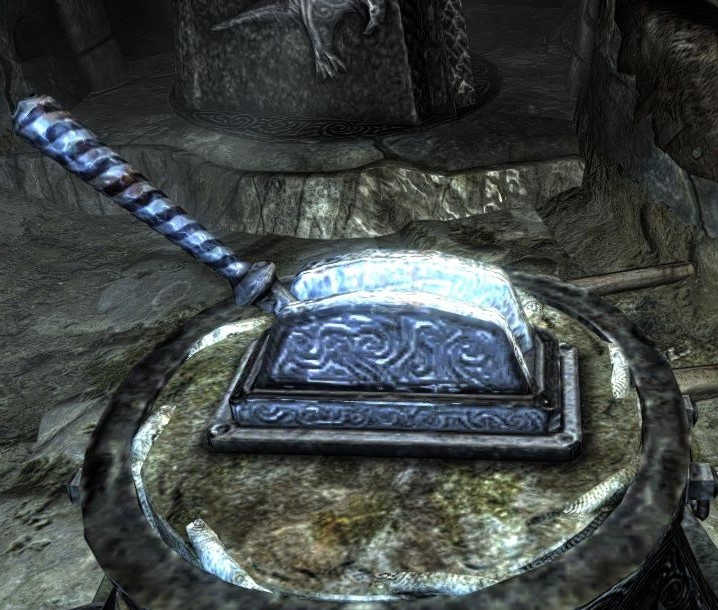
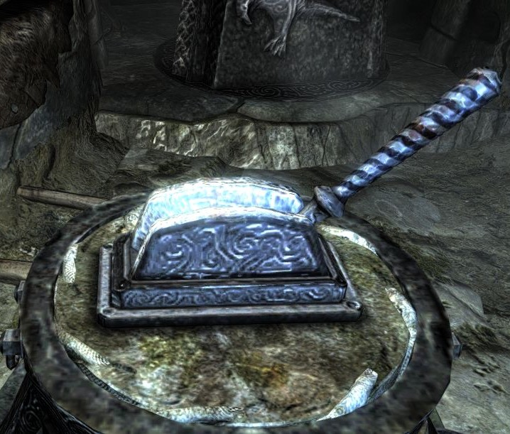

The solution here is obvious: Why bother sneaking past 'em just to have to do it again later, when you can take care of things now? Sure, you might have gone a bit overkill with it, but hey, There's nothing wrong with being efficient, they always say. Oh, the things you can do with Stealth 100.
Moving on to the next room, you find that this one is about as straightforward as it gets, at least as far as dungeon puzzles. Instead of any doorways or exits, before you is a set of levers identical in appearance, with no appearent difference in use. No doubt about it, one lever will slide open some secret passageway as is all the rage with catacombs these days, the other giving way to a gruesome and terrible death. It's something you've come to expect at this point.
You suppose you could flip a coin, but in a spur of of the moment you reach forward and pull the lever that tickles your fancy the most. Which one do you go for?
  Go for the lever on the left Go for the lever on the right